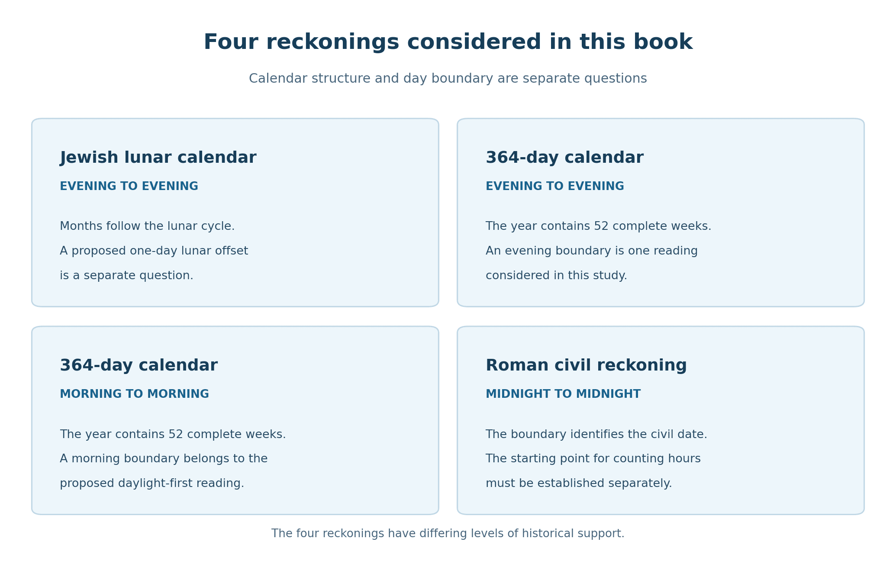
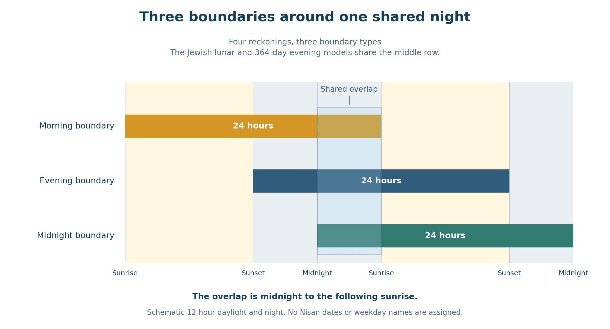

Book 1 · The Cross at the Center of Time · Chapter 2 of 18
The peoples, calendars, and boundaries gathered around Christ
“These are the LORD's appointed feasts, the sacred assemblies you are to proclaim at their appointed times.”
— Leviticus 23:4
The feasts belong to God. Their observance also belongs to the lives of people who must decide when a month begins, announce a festival, prepare an offering, and gather for worship. A calendar joins the heavens to those human decisions. It can unite a people, and it can become a point of division.1
That human setting matters to the harmony I seek. Pharisees and Sadducees, Galilean disciples and Judean authorities, Samaritans and those preserving Enochic traditions do not enter this book as interchangeable names beside columns of numbers. They bring inherited convictions about how God's time should be kept. Rome supplies another public reckoning; Egypt will contribute its own ordering of months and additional days. The field of comparison widens because the gathering in Christ concerns peoples as well as their measures.
I think of their reckonings as clocks capable of sounding together. Each has its own construction. Understanding that construction allows us to hear what its agreement with another clock can mean. An agreement in date, an overlapping portion of a night, a shared festival expectation, and an equal numerical total are different relationships. All can contribute to the inquiry when we identify which relationship is present.
The four clocks considered here are an evening-based Jewish lunar calendar, a 364-day calendar read with an evening boundary, a 364-day calendar read with a morning boundary, and the Roman civil day beginning at midnight. The two 364-day reckonings distinguish proposed ways of reckoning a day within a related calendar tradition. They are not a claim that all ancient communities fall neatly into four documented camps.
In this chapter
Four questions within every comparison
Consider the supper on the evening before the crucifixion. An evening-based Jewish date has already begun. The Roman civil date will change at midnight. A morning-based period will continue until dawn. Meanwhile, two evening-based calendars might assign different Nisan numbers to the meal because they began the month on different evenings.
These differences arise from separate decisions. Moving a day boundary does not automatically move the beginning of the month, and changing a month beginning does not establish how the numbered hours are counted.
Table 1 — The questions that govern a calendar comparison
| Question | What it determines | Example |
|---|---|---|
| How are the months and years arranged? | The sequence of dates and the relation of the year to the seasons. | Lunar months differ from the fixed quarters of a 364-day year. |
| Where does the day begin? | Which date contains the hours around sunset, midnight, and dawn. | A new evening-based date begins before the Roman civil date changes. |
| From where are the hours numbered? | The meaning of a notice such as the sixth hour. | Six daylight hours lead toward noon; a midnight civil boundary alone does not establish a midnight hour count. |
| How is the festival command read? | The date or weekday on which an observance falls. | Firstfruits on Nisan 16 differs from Firstfruits after the weekly Sabbath. |
The final distinction is especially useful. Two communities might agree about every numbered date in a month while disagreeing over the meaning of “the day after the Sabbath” in Leviticus 23. Their festival difference would arise from interpretation of the command. A disagreement about when the first crescent was recognized is a different kind of disagreement.1


Calendar structure and day boundary appear separately. The evidence for the proposed morning and evening readings of the 364-day tradition must be considered alongside the evidence for the year itself.
The moon, the witnesses, and the authority to declare a month
An observational lunar month begins through a relation between a heavenly sign and human recognition. The crescent is seen; testimony is received; a decision is announced. The moon's conjunction, its first visibility, and the public beginning of the month are related events, but they are not identical.
The Jewish calendar is more fully described as lunisolar. Its months follow lunar phases, while additional months keep the festivals in their seasonal setting. Passover belongs to spring. A succession of twelve-lunation years would fall progressively earlier within the seasonal year unless adjustment were made.2
The Mishnah preserves accounts of examining witnesses about the moon's position and appearance. It also describes signals and messengers carrying news of the new month. These accounts show the practical importance of observation, communication, and recognized authority. Their later setting must be remembered when applying individual details to the first century.2
One memorable dispute concerns Rabban Gamaliel and Rabbi Joshua. Their disagreement would place the Day of Atonement on different dates. It becomes a question of whose determination governs the community's worship. The account belongs to Yavneh after the Temple's destruction, yet it reveals why calendar differences could reach beyond a disagreement about the sky.3
Such evidence gives us a setting in which to consider the two Passover dates. If the reckoning reflected in the Synoptic supper began Nisan one evening earlier than the reckoning reflected in John's account of the authorities, Friday would be Nisan 15 in the former and Nisan 14 in the latter. The dates differ because the month beginnings differ.
I associate those perspectives, provisionally, with the Galilean disciples and Pharisaic traditions on one side, and the Temple authorities and Sadducean leadership on the other. These associations name the people involved in the proposed comparison. Geography, party allegiance, and calendar practice must still be distinguished: a Galilean identity does not by itself establish a particular rule for accepting a crescent.
Chapter 4 sets out the month beginnings this model would require in AD 33. There the astronomical limitation becomes precise. The cited reconstruction does not provide the earlier visible crescent that the Nisan 15 Friday would require. A historical explanation would therefore need another convention or decision, as well as an account of the relationship between the earlier meal and Temple sacrifice. General evidence of disputed calendar authority cannot supply those particular events.
The theological question continues through that historical uncertainty. The Gospel testimony gives us the meal Jesus shares and the sacrifice He fulfills. I believe the differing presentations belong together, and I examine the ways a calendar difference could have served that unity without inventing the missing administrative history.
A year made of complete weeks
The 364-day tradition orders the year differently. Its defining relationship is simple: 364 = 52 × 7. Four quarters of 91 days each contain thirteen complete weeks. In the familiar arrangement, the months of each quarter contain 30, 30, and 31 days.4
With the year beginning on the fourth day of the week, each quarter also begins on that weekday. The festival dates preserve their weekly places. The fourteenth day of the first month is Tuesday; the fifteenth is Wednesday. Under an evening boundary, that Wednesday date begins on Tuesday evening. Naming the daylight and its preceding evening carefully prevents a feast from appearing to move merely because its boundary has been described loosely.
This regularity has a religious force. Sacred dates return in an orderly weekly pattern. The calendar makes the Sabbath visible within the structure of the whole year. Jubilees defends this order strongly and warns against reckonings that displace the appointed seasons.5
The term solar is convenient for this tradition, although 364 days are shorter than the natural seasonal year. Its written scheme and its possible long-term adjustment therefore need separate consideration. Chapter 5 will explain why whole-week additions offer a possible way of preserving both the seasons and the weekly pattern. The surviving evidence does not establish one universally followed adjustment schedule.
The Qumran material also brings lunar phenomena into relation with the fixed year and priestly courses. A commitment to 364 days need not imply ignorance of the moon. These texts preserve efforts to coordinate different heavenly and ritual cycles.4
I use Qumran when referring to that textual evidence. Essene and Enochic identify related historical or literary discussions, but the terms should not be made to say that every person so described used an identical calendar with an identical day boundary. The 364-day year itself is well attested; particular communal applications require their own evidence.
Morning in the Enochic vision
The Book of the Luminaries, 1 Enoch 72–82, follows the courses of sun and moon and explicitly gives the 364-day year. Its detailed descriptions return repeatedly to the sun's rising and the changing lengths of daylight and darkness. The Parables of Enoch also describe the luminaries within God's ordering of light and darkness.6
I find a morning-first perspective in this material that becomes significant when read beside Genesis. Light goes forth; its course is followed; night succeeds it. Morning can be contemplated as a beginning from which the associated night receives its place.
That theological reading and a community's civil date boundary are related questions, but evidence for one does not complete the other. Neither a sunrise description nor the number 364 alone establishes that every calendar date began at dawn. I retain a morning-based reckoning as part of the comparison and test its biblical setting in the next chapter.
The sanctuary supplies another morning-oriented sequence. Numbers prescribes one daily lamb in the morning and the other at twilight. Leviticus describes the burnt offering continuing through the night until morning. Later Temple descriptions attend closely to the eastern sky before the morning service, while some sacrificial rules join the offering's day to the night that follows.7
These practices make daylight followed by night a meaningful unit within worship. An evening boundary for a festival and a morning limit for the use of an offering can coexist, because they govern different things. The richness of biblical timekeeping becomes clearer when each rule is allowed to retain its purpose.
I suspect that morning-oriented patterns preserve something old in Israel's understanding of time. The more specific theory of a general change from morning to evening reckoning, especially during the exile, remains a historical proposal. The texts do not record one decree replacing every earlier boundary. My comparison can use the morning and evening patterns without making that unrecorded change its foundation.
The Roman midnight
The Roman civil day brings midnight into view. Aulus Gellius, reporting an earlier discussion by Varro, describes a civil date extending from one midnight to the next. The discussion recognizes that peoples can divide their days differently. Here is an ancient example of the same hours being organized under different boundaries.8
Midnight divides a night that an evening-based calendar has already included within its new date. A morning-based period continues through the night toward dawn. One stretch of darkness therefore belongs to three different kinds of daily arrangement.
The Roman boundary does not by itself tell us how John numbers the hours. John 11:9 speaks of twelve hours in the day, and the ordinary daylight count places the sixth hour toward noon. A proposal that his trial notice uses another hour count must establish that usage separately. We cannot obtain it merely by pointing to the Roman civil day.8
This distinction lets the civil reckoning contribute its full value. It makes midnight an actual boundary within the comparison. It also places noon halfway through a civil day. Later, when the two Passover midnights are set on either side of Christ on the Cross, that civil midpoint becomes especially suggestive to me.
One night shared by different days
We can now display the relation among the boundaries. For clarity, the diagram uses twelve hours of light and twelve of darkness. These equal periods are a schematic convention, rather than a calculation of Jerusalem's sunrise and sunset on a particular date.
The morning-based period begins first, at sunrise. The evening-based period begins at the following sunset. The civil period begins at midnight within their shared night. Each continues for twenty-four hours. From that midnight until the next dawn, all three selected periods overlap.


The overlap is a relationship among selected periods. Their weekday names and festival dates require a further mapping.
The figure gives a precise form to one aspect of the harmony. A morning-based day is drawing toward its end, an evening-based day is passing through its night, and a civil day has recently begun. Their positions differ, yet they contain the same hours.
The overlap alone does not tell us that each calendar calls those hours the first day of the week. Suppose we label the sunrise-to-sunrise period “the first day.” If the evening-based first day begins at sunset within that period, the two share the following night. If it begins at the preceding sunset, they share the daylight instead. We must therefore specify how the weekday labels are paired, as well as where each day begins.
I make the selected pairing explicit because I want the reader to see the pattern I am examining. Its physical overlap is calculable. Its application to particular ancient communities remains part of the historical reconstruction. Its significance for Christ is the theological reading I draw from their relation.
The proposal about the Cross and time does not blur these distinctions. It gives me a reason to attend to them. If created measures can witness to a unity deeper than their differences, the character of each measure matters. We hear the clocks together by understanding what each is sounding.
The appointed hour
John's own treatment of the hour gives the chapter its strongest center. At Cana the hour lies ahead. Later, opponents cannot seize Jesus because His hour has not come. As the Passion approaches, He announces its arrival and speaks of the grain of wheat that dies and bears much fruit.9
Table 2 — The approach of the hour in John
| Passage | Movement of the narrative |
|---|---|
| John 2:4 | Jesus' hour has not yet come. |
| John 7:30 | His opponents cannot determine its arrival. |
| John 12:23–24 | His glorification is announced through the image of fruitful death. |
| John 13:1 | His departure to the Father is approached in love for His own. |
| John 17:1 | The hour has come; the Son asks to glorify the Father through His glorification. |
The hour gathers events whose meaning reaches beyond a single clock interval. The supper, betrayal, suffering, death, and glorification belong to the fulfillment of His mission. Within that appointed hour, John gives particular chronological notices that I believe deserve close attention.
The six days before Passover, the approximate sixth hour, and the darkness of the first-day visit are among them. Their significance grows through the narrative and through their relation to Scripture. I do not need every occurrence of day or hour to be an independent code. I seek the coherent pattern to which their placement may contribute.
The difference between the supper perspective and the sacrifice perspective gives that inquiry a concrete focus. The disciples encounter Christ as the giver of the covenant meal. The authorities proceed toward their feast while delivering its fulfillment to death. In the Gospel testimony I see human expectation and divine action meeting in ways the participants themselves may not understand.
This is the kind of providence the book examines. It can encompass both intentional observance and unintended testimony. The calendars retain the marks of the people who keep them, while their fulfillment belongs to God.
While it was still dark
John brings us to the empty tomb before daylight. Mary finds the stone removed; the risen Christ has acted before the morning becomes visible to her. The exact instant is not recorded. The darkness is part of the setting John chooses to place before us.10
I read it in the light of the Morning Star. Christ announces a day whose arrival the surrounding darkness cannot prevent. An evening-based reckoning has entered its new date; the midnight civil reckoning has done so as well; a morning-based period approaches its boundary. Their differing positions become ways of contemplating the same victory when the required date and weekday correspondence is specified.
The clocks need not lose their different beginnings in order to bear witness together. Each allows us to approach the event from another side: the feast already begun, the sacrifice anticipated, the night nearing its end, the morning about to appear. I believe Christ gathers their expectations into His appointed hour.
The next chapter returns to the beginning of Scripture. Before giving morning, evening, and darkness their fuller place around the Cross, we must ask how Genesis first arranges them around the gift of light.
Sources and notes
1. Leviticus 23:4–6, 11, 15–16, 32. The opening quotation is verse 4. For the fixed-sixteenth barley offering, see Josephus, Antiquities 3.250–251. Mishnah Menachot 10:3 and Babylonian Talmud Menachot 65a–65b preserve the dispute concerning the weekly Sabbath. Return to text 1 · Return to text 2
2. Mishnah Rosh Hashanah 2:2 and 2:6; Deuteronomy 16:1; Mishnah Sanhedrin 1:2. These passages concern announcement, testimony, the spring festival, and intercalation authority. Later descriptions must be used with attention to their historical setting. Return to text 1 · Return to text 2
3. Mishnah Rosh Hashanah 2:8–9. The Yavneh episode supplies comparative evidence about authority and disagreement, not a record of the Passion year's month proclamations. Josephus, Antiquities 18.16–17, also cautions against a simple division of public practice by party: he describes Sadducean officeholders accommodating Pharisaic expectations. Return to text
4. 1 Enoch 72–82; 4Q321, Calendrical Document or Mishmarot, Israel Antiquities Authority material in the Library of Congress exhibition, with translation and transcription by S. Talmon and I. Knohl. The 364-day arrangement gives 4 × 91 = 52 × 7. With Wednesday as day 1, day 14 is Tuesday and day 15 Wednesday. The date boundary is a further question. Return to text 1 · Return to text 2
5. Jubilees 6:28–38, James C. VanderKam's translation. Its polemic against lunar reckonings must be retained as evidence of its author's commitment. The reconciliation proposed in this book is a Christological reading of differing traditions, not a claim that Jubilees itself approves every calendar. Return to text
6. 1 Enoch 72:1–32, especially 72:32; 41:6–9, R. H. Charles translation. Chapters 72–82 belong to the Book of the Luminaries; chapter 41 belongs to the Parables. Their sun-and-moon descriptions supply the literary setting for the author's morning-first reading, not a direct ordinance establishing a community's civil boundary. Return to text
7. Numbers 28:3–8; Leviticus 6:9–13; Mishnah Tamid 3:2 and Zevachim 5:3. The latter's eating period concerns particular offerings; its midnight limit does not establish midnight as the boundary of the whole Temple calendar. Return to text
8. Aulus Gellius, Attic Nights 3.2.1–9, reporting Varro. Compare John 11:9–10 and 19:14. The civil date boundary and the point from which numbered hours are counted are distinct matters. Return to text 1 · Return to text 2
9. John 2:4; 7:30; 12:1, 23–24; 13:1; 17:1. The table paraphrases these notices. The argument concerns their narrative progression and makes no claim about a special total number of uses of the Greek word for hour. Return to text
10. John 20:1–2; Revelation 22:16. The Morning Star relationship continues the interpretation introduced in Chapter 1. The diagram uses schematic periods beginning at hours 0, 12, and 18; all three overlap from hour 18 to hour 24. The two evening-based calendar models share the same boundary row, although their date numbers may differ. Return to text
Scripture quotations are from the Berean Standard Bible (BSB), public domain.